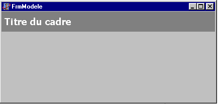

DYNAMIC WINDOWING SYSTEM WITH FRAMES
by Didier Largange
User
level : average, with basics in object programming to go
ahead.
Tools : Delphi 5 Std or above.
INTRODUCTION
If you have wasted enough time, fighting against MDI forms, TPanel and TPageControl, trying to achieve modern looking and sophisticated interfaces : this tutorial is for you.
TFrame
is a marvellous component introduced by Borland in the 5th
version of Delphi. I now realize that it was worthing the upgrade for
itself.
Most of the lighting has been focused on its ability to be
used as a container for fonctionnal groups of components interacting
as in a form. The must been the ability to capitalize those modules,
putting them in the component tab.
But more than that,
frames are not limited to small sets of components, they can compose
large parts of your application's windows. They can also be
integrated “live” (dynamically) in your forms and not
just as “static” components.
With this tutorial, you
should be able to create in a few lines of code, Outlook-like,
flexible, maintainable and upgradable interfaces.
CREATING THE PROJECT
-
menu File + New application
- rename the main form as “FMain”
-
menu File + Save as ... Main.pas
- menu File + Save le projet as
... Tuto_frame.dpr
CREATING THE FRAME MODEL
- menu File + New frame
- insert the following code :
interface
procedure
ShowFrame; virtual;
implementation
procedure
TfrmModel.ShowFrame;
begin
// nothing
end;
-
modify property Name of the frame to “FrmModel”
-
add a panel and set its properties to : Align := alTop,
Name := PanelTitre, Color := clGray

- menu Save as ... FrModel.pas
ADDING A FRAME TO THE APPLICATION
-
menu File + New + ttab tuto_frame + select FrmModel (inherit)
+ OK
- modify property
PanelTitre.Caption in “View n°1”
-
modify property Name of the frame to “FrmView1”
-
specify the actions to make when showing the frame by
overriding the ShowFrame method:
interface
...
public
procedure
ShowFrame; override;
...
implementation
procedure
TfrmView1.ShowFrame;
begin
inherited;
Memo1.Lines.Add('Here
you are in the 1st screen of the application');
end;
- save your unit as “FrView1.pas”
CREATING THE MAIN WINDOW
- Create the interface in your taste and make sure you keep a “PanelFrame” to serve as a showing area for your screens
-
in the private section, declare a “select_frame”
variable of type TFrmModel. It will point to the current frame.
-
add FrView1 to the uses clause of your implementation
section
- name as “MenuClick”
the OnClick event for calling the first screen
-
Here is the explainations for the source code below :
In
MenuClick(...) we first destroy the active frame if needed.
Then,
we dynamically create the new frame of the needed type, and
assign it to our select_frame variable. This assignment is
possible because of it type TFrmModel witch is the ancestor class of
TfrmView1.
We do not forget to initialize its Parent
property to PanelFrame so it will be placed into its
dedicated place.
Then we call the virtual method ShowFrame
toask the new frame to initialize its data.
Last, in the OnDestroy
event of the MainForm, we use FreeAndNil, FreeAndNil to free the last
used frame.
interface
uses
FrModel;
type
TFPrincipal =
class(TForm)
...
procedure MenuClick(Sender:
Tobject);
procedure FormDestroy(Sender:
Tobject);
private
select_frame
: TFrmModel;
public
end;
var
FPrincipal:
TFPrincipal;
implementation
uses FrView1;
procedure
TFPrincipal.MenuClick(Sender:
Tobject);
begin
FreeAndNil(select_frame);
if
Sender = Button1
then
select_frame := TfrmView1.Create(self)
else
Exit;
select_frame.Parent :=
PanelFrame;
select_frame.ShowFrame;
end;
procedure
TFPrincipal.FormDestroy(Sender:
Tobject);
begin
FreeAndNil(select_frame);
end;
ADDING OTHER FRAMES
Repeat the procedure ADDING A FRAME TO THE APPLICATION
N
been the numer of the screen you want to add, open the Main.pas
unit
- menu File + Use
unit ... FrViewN
- add
the following line of code in the MenuClick(...) event
else
if Sender = ButtonN then select_frame :=
TFrmViewN.Create(self)
- don't forget to set the ButtonN OnClick to MenuClick(...) !
- and thats all !
THE RESULT
Source code :
frames1.zip : Source code of this tutorial
frame2.zip
: Improved version incuding :
- procedure allowing the frame
to close itself by posting Windows message to the main window
-
grid management in Screen 2
- added Screen 21, inherited from
Screen2. Adding new functions to its ancestor

GLOSSARY
Inheritance
Creation
of a component from an another existing one. In our case, the main
interest is to automatically make use of the customizations made on
the ancestor while not duplicating code.
By
exemple, define “abilities” in TfrmModel so that we do
not need to care about them later in the TFrmView.
The
FrmView1.ShowFrame method is polymorph, so it call its
ancestor code with inherited key word, then excecutie its own
behaviour.
Giving this mecanism, it's no more necessary to manage
several variables in the MianForm, and the code for each new frame
is limited to 1 line + 1 uses clause !!!
Dynamic
creation
The act to not let Delphi auto create the frames by
placing them at desing time in the main form. We create them when
needed, thus saving saving ressources and loading time.
CONCLUSION
This
is a powerfull and flexible way to use frames. It makes you save a
lot of coding and speeds the generation and the maintainability
of common windows in an application.
By using more polymorphism,
inheritance and dynamic frame creation, you should be able from this
embryo to achieve some good windows managing systems for your
applications..
Here are some suggestions:
enrich the ancestor with components that will be automatically present in all your inherited frames at no cost. Especially with TimageList you can save a lot of ressources in an application with lots of similar screens (see the .DFM file of an inherited frame)
automatically update your application style from the ancestor frame, at design-time or at runtime. Very usefull for anabling the user to custimize the colors of the application
creating an array or a collection of TFrmModel to store open windows can help you speed rendering
create intermediate classes between TFrmModel and TFrmX for been able to produce several types of screens from the same common base class
add TActionList, events and methods in the ancestor class to centralize common behaviours : OnResize, print, export, ...
et caetera !
See frame2.zip for some illustrations.
I hope you'll have fun with these tricks, and I wish you can impress more (if not yet) your clients and gain in productivity. Do not hesitate to mail me your comments.
Regards,
Didier Largange - LOGICANTILLES